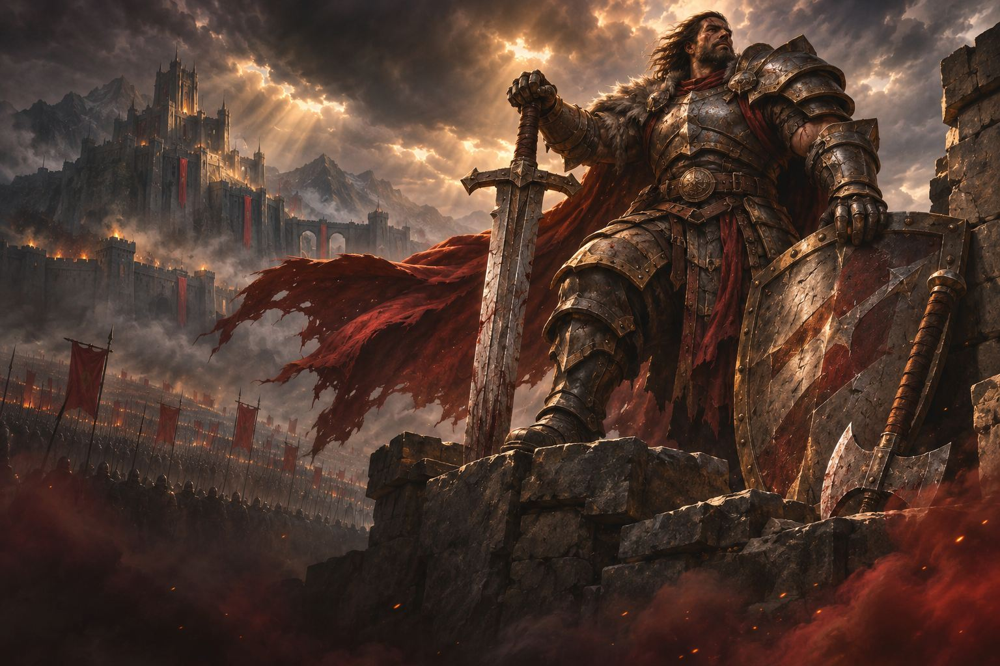

01 / IMPACT
A weapon is a timing device
A slow two-handed swing produces a different commitment than two quick one-handed attacks. Weaponmaster makes weapon families a talent decision, not mere cosmetics.

Steel is only as useful as the judgment behind it. Learn how Rage is earned, how a stance changes your choices and why the shield that holds may win a battle the sword cannot.
Warriors are made by the decisions between blows. A weapon sets the rhythm, Rage sets the budget and a stance decides what can be done when the next enemy moves.
Begin with Rage, weapon contact and the purpose of each stance. Arms, Fury and Protection are not only talent trees: they are competing responsibilities toward the target, your own survival and the people fighting beside you.
A slow two-handed swing produces a different commitment than two quick one-handed attacks. Weaponmaster makes weapon families a talent decision, not mere cosmetics.
White hits, crits, incoming danger and selected talents change which button can be afforded. A next-swing spender may erase the very white-swing Rage needed for the next attack.
Battle keeps Overpower and Spearing Strike; Berserker offers Whirlwind and Intercept; Defensive anchors threat and shield survival. The transition has a resource price.
Weapon damage, controlled burst, targeted Rend/Overpower experiments and deliberate stance swaps.
Weapon contact, critical-triggered attack speed, dual-wield resource economy and selective Health trades.
Mitigation, avoidance-fed Rage, shield-dependent threat and initiative without discarding the guard.
All builds are original archetype designs using a checked client-data tree; these are not claims of measured raid superiority. The illustrations, rankings and scenario orders are editorial models unless explicitly labeled game rules. [01] [03] [05]
The Warrior has no rotating spellbook resource. Combat builds the resource, and every wrong button can spend the future. These diagrams distinguish published mechanics from illustrative decisions.
| Class foundation – train/quest as appropriate | Purchased Forever talent – not baseline | Operational difference |
|---|---|---|
| Rend, Overpower and Slam | Bloodthrill, Improved Overpower, Improved Slam | Rend works without Bloodthrill; only paid Improved Slam removes the auto-swing delay and shortens cast/GCD/cooldown. |
| Charge, Tactical Mastery (level 14) | Spearing Strike, Improved Tactical Mastery, Vanguard | Charge is baseline; Spearing is an Arms attack; Vanguard extends Charge to Defensive Stance; 10 → 25 stance Rage retention needs 3 Arms ranks. |
| Heroic Strike and Hamstring | Sweeping Strikes → Mortal Strike | Both spend talent points; Mortal Strike specifically requires Sweeping Strikes. |
| Auto attacks, Whirlwind, Bloodrage | Furious Precision, Flurry, Reckless Swings, Gore Drinker | The Fury talents improve or extend baseline attacks and Rage tools; Reckless Swings and Gore Drinker are not trained abilities. |
| Berserker Stance, Execute, Intercept | Death Wish → Bloodthirst | Bloodthirst requires Fury points and an invested Death Wish; Flurry has no Death Wish prerequisite. |
| Defensive Stance, Taunt, Revenge, Shield Block, Shield Wall | Shield Specialization, Master of Defense, Defiance, Bastion, Focused Rage, Shield Slam | The defensive buttons exist without these ranks; Shield Slam is the Protection capstone and requires Concussion Blow. |
| Victory Rush (level 20), Thunder Clap, Sunder Armor | Improved Thunder Clap, Improved Sunder Armor, Improved Bloodrage | Forever baseline includes Victory Rush and updates to Thunder Clap/Sunder; the named Improved talents cost points. |
Note: the Sweeping Strikes row deliberately distinguishes that ability from trained spells. Level and class-quest access are separate from talent acquisition. [01] [03] [05]
Heavy individual hit; one auto-attack cadence. Two-Handed Weapon Specialization requires an actual two-hander.
Two independent weapon slots. Off-hand attacks need accuracy and can fuel Rage; main-hand queued specials have an opportunity cost.
Block Value, block chance and shield-equipped talents. Gives up off-hand DPS and several Fury dual-wield benefits.
Viable while leveling or switching weapons, but missing the off-hand and shield changes specialization payoffs.
Axe/polearm ranks increase crit; mace/staff ranks ignore a portion of target armor; sword ranks provide a chance for an extra attack. At 5/5 the listed effects are +5% crit, 15% armor ignore, or 5% extra attack chance, respectively. That is an equipment-dependent comparison, not a universal weapon ranking. [05] [06]
Master of Defense and Defiance require a shield to deliver their benefit; Bastion adds damage while shield-equipped; Shield Slam/Shield Block need one. A dual-wielding Fury Warrior cannot claim those shield-only benefits simultaneously. Taunt is a Defensive-Stance ability and does not require a shield. [05] [09]
Arms rewards reading the next weapon contact rather than merely pressing the most expensive attack. Rend, Overpower, Mortal Strike and stance changes each demand the right circumstance and a Rage reserve.
What is a weapon strike worth, and what must be prepared before it lands?
A heavy weapon rewards deliberate contact and enough Rage to use the next important ability. Avoid spending your future on a low-value attack just because you have the resource now.
Bleeds and Overpower opportunities create timing decisions around ordinary weapon strikes. Watch the target’s condition and the remaining fight rather than applying every effect by habit.
A dangerous opponent can be defeated by denying it a useful position or a completed cast. Choose the right approach and keep a reserve for interruption or control.
Improved Slam changes the cost of weaving, not the requirement to stand still. Bloodthrill is a chance from your main-hand attacks on a Rended target – not from ticks of the bleed. Faster swings may create more contact opportunities, while weapon damage and Slam casts alter how valuable each opportunity is. Neither establishes an unconditional Rend-first DPS optimum without logs. [03] [05] [07]
An enemy avoids a weapon swing, opening an opportunity you had not planned around. Check your stance, your available Rage and the important attack that will become ready next. The correct move may be to spend immediately, or to preserve enough Rage for the strike that truly matters.
Fury lives in the rhythm between hits. Momentum, critical events and the choice to risk Health can produce another opportunity, but a Warrior who spends Rage without a plan may have nothing left when it matters.
How do you earn the Rage needed to keep striking – and how much Health is safe to trade?
Two weapons change the cadence of hits and Rage opportunities. Speed can be an advantage when each resource gain is used intelligently rather than spent at once.
Some Fury options trade Health for attacking tempo. A resource exchange is only good if you remain alive and able to benefit from the next strikes.
Whirlwind and other area pressure depend on enemy placement. Moving into the correct position can matter more than pressing the attack at the first opportunity.
Reckless Swings’ tooltip includes a 15-second cooldown and the Health trade, while Gore Drinker explicitly gained Reckless Swings as a trigger in the later build. Bloodthirst is an Attack Power attack and grants a short movement-speed bonus, not its old direct heal. Flurry does not require Death Wish; Bloodthirst does. In the current client Whirlwind strikes with both weapons when dual-wielding, even without the removed Raging Blows talent. [03] [05] [08]
Furious Precision offers 4/7/10% off-hand hit by rank; Dual Wield Specialization provides up to 25% off-hand damage and 50% more Rage from off-hand attacks. These bonuses cannot be counted while wearing a shield instead of an off-hand weapon. [05] [08]
Lingering Rage delays out-of-combat Rage decay by 2/4/6/8/10 seconds across its five ranks. Bloodthirst deals 45% of Attack Power + 30 and provides 10% movement speed for 10 seconds; Gore Drinker at 2/2 restores 1% of maximum Health on each of the next three melee attacks after its named activators. [05] [08]
Two weapons are generating repeated contact when the next enemy begins a dangerous attack. A damage spender might keep the rhythm moving, but a defensive or interrupt action may prevent the loss of that rhythm entirely. Do not spend the last Rage you will need to react.
Protection is not a damage rotation with a shield drawn on the page. It is the deliberate work of keeping enemies where the group can survive them, using threat, mitigation and a watchful eye on the healer.
When should the shield be an immovable wall, and when should it be a weapon?
Protection succeeds when the group can trust who the enemies will attack. Mitigation, threat and awareness matter even when your damage is low.
A tank who reaches enemies first can shape the pull. Maintain attention with meaningful attacks, but keep defensive resources for the response.
Blocking and avoiding attacks can change your next available action. Pay attention to equipment requirements and never count shield benefits without a shield equipped.
Defiance adds 7/13/20% threat in Defensive Stance only while shield-equipped. Shield Slam requires Concussion Blow; Master of Defense requires full Shield Specialization. Bastion gives 2% damage per rank while shield-equipped. Focused Rage saves up to 3 Rage on offensive abilities. These mechanics reward actual tank equipment and contact, not merely equipping a shield at the last second. [03] [05] [09]
You have a shield equipped and the first enemy under control, but another turns toward the healer. Notice which target needs renewed threat, whether a defensive cooldown is about to be required and whether a stance change would cost precious Rage. Protect the group, then resume the damage sequence.
From the first Charge to level-60 theorycraft, the right Warrior is the one whose equipment and decisions fit the actual encounter – not a chart from a different ruleset.
| Milestone | What changes | Practical decision |
|---|---|---|
| Levels 1–9 | Battle Stance and early weapon contact; begin weapon upgrades. | A better weapon can matter more than an elegant level-ten build; learn to avoid expensive next-swing dumping. |
| Level 10 | Talents begin; Defensive Stance class quest becomes relevant. | Practice shield swaps, Taunt and dungeon tank awareness even as Arms/Fury. |
| Level 14 | Baseline Tactical Mastery: keep 10 Rage when switching stances. | Take deliberate Overpower, Intercept and Defensive decisions without assuming all Rage is retained. |
| Level 20 | Victory Rush trained; healing after qualifying kill. | Sequence manageable enemies with room for its activation, not by facetanking any dangerous elite. |
| Around level 25 | 16-point Spearing Strike / Vanguard milestones reachable with correct row investment. | One opens a Battle strike; the other allows Defensive Charge. Both shift the opener. |
| Level 30 | Berserker Stance quest and deeper stance tools. | Learn when to enter Berserker for Whirlwind and Intercept, and when 10% extra damage taken is too costly. |
| Level 40 | Dual Specialization becomes available according to Forever talent guidance. | Keep a tank/solo or damage/PvP configuration if supported; trainer and respec costs may change. |
| Level 60 | 51 talent points and 31-point capstones possible. | Evaluate gear, Rage and group assignment; do not confuse a legal 51-point build with raid validation. |
Milestone rules: [01] [07] [08] [09] [13]
The difference between efficient leveling and impressive isolated damage is recovery time. Arms needs a weapon and planned pulls; Fury wants two reliable weapons and controlled Health expenditure; shield Protection can convert incoming melee into Rage but may kill more slowly. Victory Rush helps after eligible kills, not during a prolonged no-kill elite.
A genuine tank uses a shield, Defensive Stance, Taunt recovery, target cycling, defensive positioning, Thunder Clap, Sunder, Revenge and – when talented – Shield Slam. DPS Warriors should coordinate Sunder and Battle Shout. Rage-starved off-tanking is a distinct problem from active main-tanking.
At this edition’s date, the first raids were scheduled for December 9. That prevents a trustworthy level-60 nine-build parse leaderboard. Raid evaluation needs boss armor, weapon options, healing budget, threat limit, mechanics, uptime, raid buffs and actual combat logs. [10]
Equipment: shield, tank-appropriate mitigation gear, and a dependable one-hand weapon. Tools: Defensive Stance, Taunt, Shield Block, Revenge, Sunder and stance-aware interrupts. Talents: Protection capstone Shield Slam is optional to the basic act of tanking low-level dungeons, but these three level-60 tank dossiers all invest in it. [05] [09]
A shield swap does not create Defiance, shield-fed Rage talents, Focused Rage, threat-ready gear, or incoming-damage judgment. A Fury Warrior can rescue with Taunt and a shield, but sustained dungeon tanking requires planned mitigation, encounter control, and meaningful threat. The Duelist is an experimental shield-led build; the Bastion and Vanguard are built specifically around tank operation. [05] [09]
All the original playable races can be Warriors, and Forever adds Alliance or Horde Skyborne Warrior options. Racial bonuses were retuned several times. Human Ruthless, Dwarf Artisan’s Precision, Tauren Endurance, Troll Berserking and Gnome Escape Artist illustrate distinct stat, survival, haste and mobility decisions. Do not assume the old Human Sword Skill or Orc Axe Skill meta is current. Recheck the live racial tooltips when choosing. [11] [12]
Leveling: replace low-damage weapons aggressively; carry a shield even when primarily two-handed. Mid levels: watch weapon requirements on new talents and learn the Rage cost of Heroic Strike/Cleave queues. Level 60: compare actual DPS and speed, hit consistency, Strength/AP, crit, armor, Stamina, Defense and Block Value according to role. An attractive rare weapon can be wrong for Weaponmaster or off-hand economy.
A field manual is only useful if it survives a patch. The 13 November 2026 client data is the talent baseline; official updates override the September preview, and the encounter plans are distinguished from measurements.
Blizzard’s class deep dive introduced baseline Tactical Mastery at level 14 and Victory Rush at level 20; later changes increased crit-generated basic-attack Rage from +75% to +100%. The November 2 notes revised Fury talents and raised Defensive Stance to +80% threat. [01] [02] [03]
The armory lists 53 current Warrior talents across Arms, Fury and Protection, with row positions, maximum ranks and explicit prerequisites. Its November 13 client build is 1.60.1.70938. This guide’s nine 51-point maps were validated against that layout, its row gates and its prerequisite links. [05] [06]
Forever-specific Arms, Fury and Protection guides support qualitative relationships: Bloodthrill is a main-hand hit proc rather than a Rend tick proc; Heroic Strike and Cleave replace a Rage-generating auto attack; off-tank Rage depends on being attacked. The precise priority order varies with gear and fight. [07] [08] [09]
No credible cross-build logs establish the DPS, damage-taken or threat rankings of these nine original point layouts as of this edition. The first raids are scheduled for 9 December 2026, after publication. The 1–5 atlas is qualitative – never simulated DPS. [10]
| Confirmed transition | Current consequence | Why the Warrior feels different | Evidence |
|---|---|---|---|
| Sept 30 → Oct 1 | Critical basic attacks now generate +100% Rage rather than +75% | Crit affects both output and next-spender affordability | [02] |
| Oct → Nov 2 | Defensive Stance threat bonus raised to +80% | Shield tanks hold meaningful single-target and group threat earlier | [03] |
| Nov 2 | Bloodthrill 2 ranks, Flurry 3 ranks, Tactical Mastery talent 3 ranks | Cross-tree point budgets become radically different | [03] |
| Nov 2 | Reckless Swings + Improved Whirlwind added; Raging Blows removed | Health-to-Rage Fury and AoE Fury are real separate choices | [03] |
| Nov 2 | Bloodthirst requires Death Wish; Flurry does not | Fury capstone planning must include Death Wish | [03] |
| Nov 7 client / Nov 10 notes | Gore Drinker includes Reckless Swings; Sweeping charges no longer wasted without a second hit | A later hotfix can change what a planned rotation actually does | [04] |
Source precedence: current talent-client tooltips and Blizzard hotfixes before secondary guides, then scenario inference. Any reference repeating the preliminary 75% critical-Rage value or old pre-November talent nodes is historically interesting but not the current rule.
Every dossier carries a complete 51-point talent allocation, named ranks, row-gate checks, prerequisite verification, combat priorities, gear choices, stance rules and conditional role suitability.
Doctrine only becomes useful when a fighter must stand somewhere and commit. The nine Warrior dossiers that follow place complete talent plans beside the battles they are designed to survive. They are examples of applied judgment, not an argument that every Warrior must wear one of nine prescribed identities.
A single decisive edge
35/16/0 · 51 / 51
The blade that keeps the wound open
41/10/0 · 51 / 51
Terrain is another weapon
31/20/0 · 51 / 51
Two weapons, one unbroken rhythm
17/34/0 · 51 / 51
Spend blood to purchase momentum
5/39/7 · 51 / 51
The crowd is the target
13/38/0 · 51 / 51
The wall that earns its Rage
5/0/46 · 51 / 51
Advance behind the shield
8/12/31 · 51 / 51
An answer behind every guard
20/0/31 · 51 / 51
A single decisive edge
This warrior asks one question before every swing: can the next Mortal Strike land while the enemy is pinned in melee? Heavy individual hits, Sweeping Strikes when a second body is available, and weapon-type-specific Weaponmaster value define the plan. This is not a Rend-proc specialist: Rend and Deep Wounds support damage, while resources are reserved for dependable weapon attacks.
Five spent points in lower rows unlock each next tier. This build was checked against every selected talent’s gate, not just the final 31-point capstone. [05] [06]
A commander of impact rather than frequency. The fight is won by keeping a high-value target in range, not by filling every empty instant with Heroic Strike.
Slow, high-damage two-handed axe, polearm, sword or mace; keep a shield swap
Charge and white attacks provide the opening economy. Critical auto attacks yield extra Rage; keep a Mortal Strike reserve and avoid next-swing Heroic Strike when it would starve the next cooldown.
Battle Stance is the home position for Overpower, Spearing Strike and Sweeping Strikes. Shift to Berserker for Intercept, Pummel or Whirlwind when necessary; the 3/3 Improved Tactical Mastery ceiling is 25 retained Rage.
Charge from outside combat → establish Hamstring or armor support if needed → Mortal Strike as the signature spend → Overpower on a legal activation → use Execute in the finishing window. Do not treat Slam as a rotational requirement without its talent.
Use Sweeping Strikes on two targets that will actually stay adjacent. For four enemies, Thunder Clap and controlled Cleave are supplementary; repeated Whirlwind requires a stance decision and sacrifices some stored Rage.
Own an assigned Sunder Armor responsibility only when the group needs it. Favor clean Mortal Strike windows and weapon uptime. Avoid any burst plan that assumes unlimited Rage or an always-available second target.
Keep Hamstring active on retreating enemies. A switch to Berserker for Intercept is a deliberate resource trade; Spearing Strike requires Battle Stance. A two-handed swing lost to chasing is costly.
Sweeping Strikes is a target-count cooldown, not free single-target damage. Use Retaliation against eligible attackers; Shield Wall needs a shield and Defensive Stance. Recklessness is separately timed, not locked to Shield Wall.
Weapon DPS and reliable hit first; then Strength / Attack Power and critical chance, subject to target defenses. Weaponmaster changes relative value: axe/polearm crit, mace/staff armor ignore, sword extra attack.
Solo excellent with planned pulls; dungeons damage/off-tank only with shield swap; raids plausible physical-DPS contributor but unranked; PvP solid anti-healer pressure.
Predictable high-value attacks; healing reduction from Mortal Strike; strong double-target punish; flexible stance utility.
Long swing commitment; mobility interruption; high-cost Heroic Strike bait; limited recovery during long solo elites.
Qualitative editorial qualities, not log-derived damage rankings. Refer to the Atlas scale.
The blade that keeps the wound open
Rend is not merely damage here: a Rended target lets main-hand melee attacks trigger Bloodthrill, providing an additional route to Overpower. Improved Slam prevents Slam from postponing the next automatic swing. Together they alter the decision tree without proving that Rend reapplication and Slam should always outrank Mortal Strike.
Five spent points in lower rows unlock each next tier. This build was checked against every selected talent’s gate, not just the final 31-point capstone. [05] [06]
A wound-maintaining swordsman who reads the next attack window. Rather than an endless bleed spammer, the Reaver alternates stable Mortal Strike pressure with opportunistic Overpower and carefully placed Slam.
Two-handed weapon with dependable main-hand contact; different speeds alter proc opportunity, not the written 20% per-hit chance
Rend is an upfront investment; pay it when the target will live long enough to produce main-hand opportunities. If a Bloodthrill activation appears, budget Rage for Overpower before dumping. The bleed ticks themselves do not trigger Bloodthrill.
Remain in Battle Stance to use Overpower without a costly switch. Improved Tactical Mastery provides 25 retained Rage for an emergency Berserker Pummel or Intercept; return without wasting a high-Rage bank.
On a durable opponent: apply Rend once, secure weapon contact, press Mortal Strike at a good window, take Bloodthrill/normal Overpower activations, and fit Improved Slam where the stationary cast is safe. Refresh Rend for value, not reflex.
Do not spread Rend indiscriminately to four mobs dying quickly. A long-lived priority target gets Rend; Sweeping Strikes handles the second body, with defensive attention when the pack turns on you.
Best laboratory for the build: prolonged target uptime gives repeated chances for Bloodthrill while the no-swing-delay Slam mechanic matters. Track proc opportunities, Rend uptime, and lost melee swings separately.
When forced to move, a Slam cast becomes a liability. Favor instant Mortal Strike or Overpower after returning to range, keep a control reserve, and resume wound maintenance only when the target survives it.
Sweeping Strikes pairs with a second long-lived target. Retaliation and a shield swap are recovery tools, not permission to hardcast Slam during a dangerous hit sequence.
Reliable hit and a capable main-hand weapon matter to Bloodthrill opportunity; Strength / Attack Power boost attacks and Rend. The correct weapon speed is encounter-dependent and not established by a universal log-based ranking.
Solo engaging on sturdier mobs but inefficient on trivial enemies; dungeons selective target specialist; raids untested as an optimal rotation; PvP complicated by movement.
Extra Overpower access on Rended targets; a distinct Slam weaving cadence; high potential against durable opponents; deep Arms toolkit.
Rend setup can be wasted on short kills; requires attention to main-hand contacts, stance and casts; experimental raid efficiency.
Qualitative editorial qualities, not log-derived damage rankings. Refer to the Atlas scale.
Terrain is another weapon
The Marshal invests at the intersection of Arms pressure and Fury support. Improved Hamstring, Improved Intercept-independent baseline Intercept, Piercing Howl, and stance retention become the actual identity. Its output may trail deeper Weaponmaster investment, but its decision advantage appears when enemies refuse to stand still.
Five spent points in lower rows unlock each next tier. This build was checked against every selected talent’s gate, not just the final 31-point capstone. [05] [06]
A battlefield officer: put enemies where you want them, then strike. The extra control tools make the opponent fight your path rather than the other way around.
Two-handed reach for pressure, one-hand/shield swap for desperate moments; mobility kit outranks weapon aesthetics
Plan the cost of every stance change before chasing. Anger Management helps smooth combat resources; Piercing Howl adds a control spender. Pressing Mortal Strike with no Rage left for a follow-up slow may lose the next several seconds of uptime.
Battle for Charge, Hamstring, Spearing Strike and Mortal Strike; Berserker for Intercept and Pummel; Defensive for Taunt, Disarm and shield-based emergency defense. Improved Tactical Mastery is not a free stance change at full Rage.
Apply Hamstring early against mobile threats. Mortal Strike under pressure windows; use Improved Hamstring roots opportunistically. Overpower on a dodge or when valid, rather than chasing a damage meter at the expense of positional control.
Piercing Howl buys space when four mobs surround you; Thunder Clap or Sweeping Strikes when safe. This is a control-first approach, not a claim to outperform true cleave specialists.
A stationary boss removes much of the control dividend. Keep Mortal Strike, assigned group utility and survival discipline; accept lower theoretical weapon-specialization throughput.
Anticipate the kite, preserve Rage below 25 before stance switch, Intercept from Berserker in combat, and immediately re-establish Hamstring. Spearing Strike can dismount eligible targets in Battle Stance.
Coordinate Intimidating Shout, Retaliation, Berserker Rage (which correctly removes Sap after the November 13 fix) and defensive swaps. Do not fear a dungeon pack into another pull; control must respect the environment.
Weapon damage and hit still matter, but Stamina, defensive gear swaps and utility timing deserve more budget than a pure raid DPS setup.
PvP identity strongest; excellent problem-solver solo; dungeon utility damage; raid DPS viable only with gearing and encounter-specific validation.
Control depth; mobility answers; strong healing reduction; fewer forced bad decisions under a kite.
Surrenders some specialization damage for utility; stance errors burn Rage; many control effects may fail on immune bosses.
Qualitative editorial qualities, not log-derived damage rankings. Refer to the Atlas scale.
Two weapons, one unbroken rhythm
A conventional Fury damage build that purchases Bloodthirst and Flurry while supporting reliable off-hand hits with Furious Precision and off-hand damage/Rage with Dual Wield Specialization. The engine is steady melee contact, not the size of any individual white hit.
Five spent points in lower rows unlock each next tier. This build was checked against every selected talent’s gate, not just the final 31-point capstone. [05] [06]
An engine of paired steel. Every auto attack is an economic event; every crit can accelerate future swings through Flurry.
Fast or medium one-hand pair; off-hand hit reliability and weapon uptime are central
Off-hand hits contribute Rage, improved by Dual Wield Specialization. Critical basic attacks yield double normal Rage. Do not queue Heroic Strike at the expense of a Rage-generating main-hand swing unless you can afford the opportunity cost.
Berserker Stance favors Whirlwind, Pummel and sustained crits but increases incoming damage. Brief Battle/Defensive swaps are possible with baseline Tactical Mastery and 3/3 Improved Tactical Mastery; return when it is safe.
Stay in range → keep Battle Shout → Bloodthirst on appropriate opportunity → Whirlwind as a viable damage spend → sustain Flurry via crits → use Heroic Strike only with genuinely excess Rage. Execute is a finisher.
Whirlwind strikes with both weapons while dual-wielding in current Forever, but only up to its supported target count. Cleave consumes a queued main-hand swing; keep a control/interrupt budget rather than forcing every filler.
Stable melee time makes flurry/attack-speed payoffs easier to realize. Bloodthirst contributes a small movement-speed buff; no amount of guide theory guarantees the best raid rank before logs.
Avoid overcapping on the sprint between targets: use Bloodthirst speed benefit when it can matter, Intercept when in combat, and Piercing Howl when kiting must be stopped.
Death Wish is required for the Bloodthirst talent and increases physical damage while increasing damage taken. Save shield swap and Shield Wall for danger, not as a permanent substitute for a tank.
One-hand weapon quality on BOTH hands, hit consistency, Strength / Attack Power, crit and weapon-skill equivalent interactions from Forever – not imported Classic racial weapon skill advice.
Solo lively when mobs are manageable; dungeon cleave DPS; raid damage prospect (not ranked); PvP pressure but less tactical control than Marshal.
High sustained attack activity; strong resource generation on contact; flexible off-hand itemization; rapid response to Bloodthirst openings.
Misses and avoidance punish off-hand economy; hard-hitting foes make Berserker risky; gear hungry across two weapons.
Qualitative editorial qualities, not log-derived damage rankings. Refer to the Atlas scale.
Spend blood to purchase momentum
Reckless Swings converts a slice of base Health into future Rage-generating attacks; Improved Bloodrage increases Bloodrage’s total Rage; Gore Drinker returns health on the next few weapon hits after specified triggers. Blood Craze adds reactive healing. The build deliberately emphasizes everyday smoothing and careful life management over peak parses.
Five spent points in lower rows unlock each next tier. This build was checked against every selected talent’s gate, not just the final 31-point capstone. [05] [06]
A fighter who spends vitality to buy tempo and recovers it only by remaining on target. The health bar is part of the rotation, but not an infinite resource.
Dual one-hand weapons; shield reserved as an emergency swap, not a permanent damage configuration
Improved Bloodrage supports a predictable start. Reckless Swings costs 25% of base Health and promises +5 Rage on each of the next four melee attacks within 8 seconds. Missed uptime makes that trade poor; do not press on a near-death pull.
Berserker for pressure when incoming damage is acceptable. Improved Berserker Rage supplies immediate Rage and removes movement impairments; Battle or Defensive swaps retain only the baseline 10 Rage because the build takes no Improved Tactical Mastery.
Start safe → Bloodrage if Health budget allows → establish attacks → Bloodthirst/Flurry → Reckless Swings only with four plausible hits → observe Gore Drinker returns rather than assuming a net gain.
Four mobs can overwhelm the health budget. Use Piercing Howl, reduce incoming swings, prioritize Whirlwind when the pull is stable, and disengage rather than spending more Health in panic.
Bloodthirst triggers Gore Drinker and fuels sustained pressure. Reckless Swings is not a blind on-cooldown button: spending 25% base Health into avoidable boss damage can cost more than the Rage earns.
Reckless Swings requires connecting follow-up attacks inside its short window. Avoid activating before a forced movement mechanic. Improved Berserker Rage can clear movement impairments and aid uptime.
Death Wish increases incoming damage; combine cautiously with Reckless Swings. Gore Drinker heals do not generate extra threat. Blood Craze triggers on significant hits or being crit, but is not controllable like a potion.
Balanced one-hand upgrades, Stamina / armor for survival, hit to ensure purchased swings land, Strength / AP and crit; evaluate net health swings rather than tooltip healing alone.
Solo sustain experiment; dungeon DPS with restraint; raid unproven relative to standard Fury; PvP situational if opponents can deny four follow-up hits.
Active resource smoothing; self-heal opportunities; engaging solo pace; good long-fight flexibility when healing covers self-costs.
Health expenditure can kill careless players; short contact windows waste Reckless Swings; baseline stance retention only; experimental level-60 role.
Qualitative editorial qualities, not log-derived damage rankings. Refer to the Atlas scale.
The crowd is the target
The Ravager spends a greater share of talents on the conditions around a large pull: full Booming Voice, Piercing Howl, full Dual Wield Specialization and improved Whirlwind. This is more than the Dual-Blade with a different name: it budget-controls packs, keeps enemies inside the arc, and may defer single-target attacks to seize an AoE window.
Five spent points in lower rows unlock each next tier. This build was checked against every selected talent’s gate, not just the final 31-point capstone. [05] [06]
A windmill with battlefield judgment. The correct move is often a position adjustment that makes the next Whirlwind connect with every nearby target.
Reliable dual one-handers for Whirlwind; switch to a shield only for emergency defensive play
Build Rage while entering the pack and do not spend all of it on Heroic Strike. The build uses Reckless Swings but omits Gore Drinker; the health cost has no specific Gore Drinker refund, so choose its timing conservatively.
Berserker enables Whirlwind and Pummel; Improved Tactical Mastery is 3/3 so stance changes may preserve 25 Rage. Use Battle for Charge before combat and Defensive for threat rescue with shield equipped.
Bloodthirst remains a major reliable attack; Improved Whirlwind still increases damage to the closest target, but do not sacrifice critical interrupts merely to hold a damage pattern.
Gather four opponents into melee, slow with Piercing Howl if needed, spend on Whirlwind with both weapons, then evaluate Cleave as a next-swing excess-Rage dump. Refresh shouts cheaply through Booming Voice.
On a stationary single target, its cleave-oriented points can offer less value than a fully optimized direct damage package. Swapping targets can make Improved Whirlwind’s closest-target modifier tactically important.
Position is the main cooldown. Intercept for a straggler after Rage planning; pull toward a clump rather than chasing a single low-health runner out of melee reach of three others.
Use Death Wish when sustained safe target contact is certain. Reckless Swings carries a Health cost and no Gore Drinker in this build; recover through baseline Victory Rush on qualifying kills when possible.
Two strong one-handers, steady hit and attack power, enough Stamina to survive four-melee contact, then crit. AoE results depend heavily on enemy grouping and tank pacing.
Dungeon cleave specialist; solo packs when geared and controlled; raids only where multi-target uptime exists; PvP crowd pressure with limited defensive margin.
Purpose-built multi-target positioning; double-weapon Whirlwind; cheap howl/shout utility; tactical charge-to-cleave transitions.
Less personal healing than Bloodrage Reaver; dangerous to stand among packs; lower value on scattered enemies or pure single target.
Qualitative editorial qualities, not log-derived damage rankings. Refer to the Atlas scale.
The wall that earns its Rage
This is a deeply invested shield tank. A block can supply Rage through Shield Specialization; a dodge or parry can supply Rage through Master of Defense while a shield is equipped. Shield Block, Revenge and Shield Slam then turn defense into dependable threat. Its job is to survive the dangerous mistake, not to win a damage contest.
Five spent points in lower rows unlock each next tier. This build was checked against every selected talent’s gate, not just the final 31-point capstone. [05] [06]
A fortress with a pulse. Incoming melee strikes create more opportunity to act, but only if you equip and maintain a real shield.
One-hand sword, axe or mace plus high-block-value shield; maintain an updated mitigation set
Shield Specialization grants 5 Rage on a shield block at full rank; Master of Defense gives 5 Rage on a dodge or parry with a shield at full rank. Use Bloodrage carefully when not being hit, and preserve a reserve for Shield Block or Taunt follow-up.
Defensive Stance is home: 10% less damage taken, 10% less dealt, +80% threat before Defiance. Vanguard enables Charge without leaving Defensive, but not during combat. Switching for Intercept costs excess Rage above the baseline 10.
Approach with Defensive Charge where legal → establish Sunder/Shield Slam threat → Shield Block before dangerous melee → use Revenge when available → manage cooldowns around incoming spikes.
Thunder Clap and Demoralizing Shout reduce physical danger; tab through targets with Sunder, Revenge and Shield Slam. Taunt a loose target and immediately build real threat; Challenging Shout is temporary rescue, not automatic long-term aggro.
Reserve Shield Block for meaningful swings; treat Shield Wall and Last Stand as planned recovery tools. Off-tanking may produce too little defensive Rage, so prepare a Bloodrage and opener plan before a handoff.
Vanguard keeps the initial Charge in Defensive. In combat, use positioning and threat reach first; Intercept requires Berserker and loses Rage beyond the retention limit.
Last Stand gives temporary Health, Shield Wall reduces dangerous damage, and they do not share the old lockout with Recklessness/Retaliation. Concussion Blow stuns susceptible enemies; shield bash locks down casts.
Defense skill, Stamina, Armor, shield Block Value, avoidance and hit for reliable high-threat abilities; match the mix to crushing/critical danger and the actual fight.
Dungeon tank yes by design; raid main/off-tank candidate not log-validated; solo steady rather than fast; PvP defensive objective holder.
Most layered defensive kit; shield-locked Rage engine; clear emergency tools; reliable tank identity.
Lower burst; threat starved when not attacked; weak against unblockable mechanics unless mitigation is planned; dependent on a good shield.
Qualitative editorial qualities, not log-derived damage rankings. Refer to the Atlas scale.
Advance behind the shield
Still a Shield Slam tank, but its 8 Arms / 12 Fury points purchase stance retention, critical chance and Rage continuity. Instead of maximizing every Protection passive, it keeps the 31-point shield capstone, Focused Rage and much of Bastion, then turns the extra economy into earlier offensive threat. It is not a two-hand damage build wearing a token shield.
Five spent points in lower rows unlock each next tier. This build was checked against every selected talent’s gate, not just the final 31-point capstone. [05] [06]
An iron spearhead. Charge opens the fight; the shield makes the position safe enough to keep attacking.
Fast/reliable one-hand weapon plus shield; a good weapon and accurate hits feed proactive threat
Improved Tactical Mastery retains up to 25 Rage through stance changes; 5/5 Unbridled Wrath creates added Rage on melee damage. More proactive Rage means more threat before mobs have time to generate defensive procs.
Defensive for Vanguard Charge, Taunt, Defiance and Revenge. Tactical Mastery +3/3 lets it reach Intercept, Overpower or Pummel with a larger preserved bank than the deep Bastion.
Defensive Charge → Shield Slam to claim the primary target → use Sunder/Revenge as appropriate → spend Focused Rage-discounted attacks while reserving shield-based emergency mitigation.
Build an initial Thunder Clap/Defensive Charge lead, mark the dangerous caster, use tab-target Sunder and Revenge, then funnel Shield Slam to a priority add. Bigger risks should call for shield blocking before aggressive dumping.
More early pressure can help a threat-limited tank, but its lower Protection defensive depth may matter on hard spikes. Off-tank Rage may come from weapon swings and Bloodrage instead of incoming blocks.
Vanguard in Defensive is powerful on pull but still cannot Charge in combat. Preserve a Rage ceiling for Intercept and return to Defensive immediately before tanking a boss swing.
Last Stand and Concussion Blow remain available in the 31-point line; this allocation deliberately skips Improved Shield Wall. Treat the longer Shield Wall availability as a real trade-off.
Hit and one-hand weapon quality matter more than they do for a purely passive wall, but shield Block Value, Defense, Stamina and Armor must remain real tanking priorities.
Dungeon tank yes with gear and attention; raid tank candidate awaiting evidence; strong solo shield fighter; PvP viable but not control specialized.
Proactive threat; mobile stance response; credible shield-based defensive engine; good dungeon pacing.
Fewer safety points in high mitigation tools; potential survivability cost; raid threat assumptions untested.
Qualitative editorial qualities, not log-derived damage rankings. Refer to the Atlas scale.
An answer behind every guard
A 20 Arms / 31 Protection hybrid that adds Spearing Strike, Anger Management, Overpower and 25-Rage stance retention to a real Shield Slam capstone. The price is fewer Protection mitigation ranks. It fights by switching stance for a concrete tactical reward, then immediately restoring a shielded Defensive guard.
Five spent points in lower rows unlock each next tier. This build was checked against every selected talent’s gate, not just the final 31-point capstone. [05] [06]
The duelist who refuses to discard a shield. It contests space, interrupts a retreat, and uses an actual tank talent core rather than merely equipping a buckler.
One-hand weapon and shield kept equipped for threat and avoidance synergies; optional two-hander is not the primary build
Anger Management helps in combat; Shield Specialization and Master of Defense return Rage only when properly shield-equipped. Switching below the 25-Rage cap is cheap, but swapping at a full bar still discards excess.
Defensive holds threat and blocks; Battle provides Spearing Strike and Overpower with a one-hand weapon, while Berserker offers Intercept. The PvP value comes from the right stance at the right moment – not constant dancing.
Build Shield Slam threat or damage in Defensive → respond to a dodge with Battle Overpower when affordable → use Spearing Strike on suitable targets → return to Defensive for Shield Block and Revenge.
Use Thunder Clap, shield blocks and target cycling; its reduced Focused Rage and smaller defensive investment make four attackers riskier than for Unbreakable Bastion. Crowd control before greed.
Shield Slam and Defiance make dungeon tanking mechanically possible, but demanding bosses expose the missing defensive ranks. Treat it as a secondary tank or specific encounter choice pending logs.
Bait a movement window with Hamstring and Intercept, or Battle-Stance Spearing Strike against mounted target. Vanguard still permits a Defensive Charge before combat; cannot turn it into a combat-gap closer.
Last Stand provides an emergency buffer; Shield Wall remains baseline but the build omits its improved cooldown. Concussion Blow offers control; save offensive stance games for after danger subsides.
Shield quality and survivability first for tank duties, then hit, weapon damage and Stamina for dueling. Do not replace tank gear with DPS gear and assume Defiance alone makes up the difference.
Solo and PvP experimental identity; dungeon tank conditionally with enough mitigation and practiced target control; high-risk raid tank selection.
Distinct stance-based hybrid; one-hand/shield commitment; versatile control and duel tools; legal Shield Slam access.
Lower passive damage reduction toolkit; no deep Fury throughput; stronger execution burden; endgame tanking unproven.
Qualitative editorial qualities, not log-derived damage rankings. Refer to the Atlas scale.
Five shared battlefields make the distinctions visible. Each is a five-beat decision sequence, not a combat-log clock. Read the static side-by-side orders or change the interactive explorer below.
Same enemies and starting geometry. Three tactical answers with different equipment assumptions, priorities and exposures.
Same enemies and starting geometry. Three tactical answers with different equipment assumptions, priorities and exposures.
Same enemies and starting geometry. Three tactical answers with different equipment assumptions, priorities and exposures.
Select a scenario and either one specialization or all nine builds. Side-by-side comparison chapters above remain legible in print.
The matrix is a qualitative map of playstyle fit and tactical capability – not measured damage or an unqualified tier list. Filter by spec, equipment and the content you want; sort any of twelve qualities.
Reading the scale: 1 = limited in this archetype, 2 = situational, 3 = capable, 4 = strong emphasis, 5 = defining strength. Difficulty is inverted as a preference: 1 = straightforward, 5 = demanding. Equipment dependence 5 means highly dependent on quality/fit of gear, not “better.” These are editorial judgments supported by mechanical differences, not verified performance samples.
| Warrior · 51 points | Burst | Sustained damage | Cleave | Threat generation | Mitigation | Mobility | Crowd control | Rage efficiency | Equipment dependence | Solo performance | Group contribution | Difficulty |
|---|---|---|---|---|---|---|---|---|---|---|---|---|
| Executioner Arms · 35/16/0 |
5 | 4 | 4 | 2 | 2 | 3 | 4 | 3 | 4 | 4 | 3 | 3 |
| Rend Reaver Arms · 41/10/0 |
4 | 4 | 4 | 2 | 2 | 3 | 3 | 4 | 5 | 3 | 3 | 5 |
| Marshal Arms · 31/20/0 |
4 | 3 | 3 | 2 | 2 | 5 | 5 | 4 | 4 | 4 | 4 | 5 |
| Dual-Blade Fury · 17/34/0 |
3 | 5 | 4 | 2 | 1 | 4 | 3 | 4 | 5 | 4 | 4 | 3 |
| Bloodrage Fury · 5/39/7 |
3 | 4 | 3 | 2 | 2 | 3 | 3 | 5 | 4 | 5 | 3 | 5 |
| Warstorm Fury · 13/38/0 |
4 | 4 | 5 | 2 | 1 | 4 | 4 | 3 | 4 | 4 | 4 | 4 |
| Bastion Protection · 5/0/46 |
2 | 2 | 3 | 5 | 5 | 2 | 4 | 4 | 4 | 4 | 5 | 3 |
| Vanguard Protection · 8/12/31 |
3 | 3 | 4 | 5 | 4 | 3 | 4 | 5 | 4 | 4 | 5 | 4 |
| Shieldbound Protection · 20/0/31 |
3 | 3 | 3 | 4 | 3 | 4 | 5 | 4 | 4 | 4 | 4 | 5 |
The document is meant to be checked, corrected and played – not believed on typography alone. Every mechanical claim has a reference route, and every untested idea is labeled as such.
Current 53-talent name/rank/row map, current 51-point level-60 budget, live prerequisites, 9 original 51-point legal maps, baseline stance/Rage updates, 2 November rearrangement and recent hotfix context. Numeric heatmap labels are ordinal editor judgments.
Nine-build DPS differences; shield-tank survivability under specific raid bosses; weapon-speed mathematical optimum for Bloodthrill; exact Rage-per-second curves under particular attacks; a patch-proof level-60 BiS list; PvP win rates. These require instrumentation and actual play.
Each entry opens its original source website when online. Citation links throughout this file jump here, so readers can audit the claim rather than follow a mysterious numbered footnote.
Edition date: 13 November 2026. Talent source: Forever game-client map 1.60.1.70938. Official 2 November development notes and 10 November hotfixes are read as subsequent rule authority over the September class preview. In case of later changes, check the live client and official notes.
The illustrated cover is original AI-assisted fantasy artwork generated specifically for this document. It is not Blizzard’s illustration, a game screenshot, or an in-game model. World of Warcraft and Forever names are trademarks of Blizzard Entertainment; this is an independent, unofficial field guide.
Editorial methodology: primary source for rule origin; later official update for revised numbers; current client-data tree for rank, row and prerequisite; Forever-specific class guides for qualitative combat interpretations; no imported Retail, Classic Era or Season of Discovery talent nodes. All combat flows and build-specific encounter sequences are explicit illustrations.